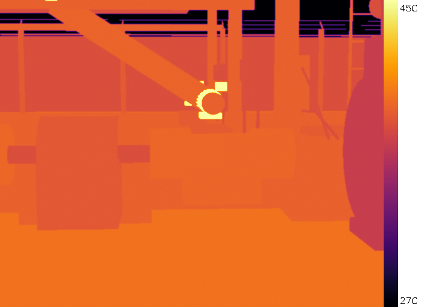
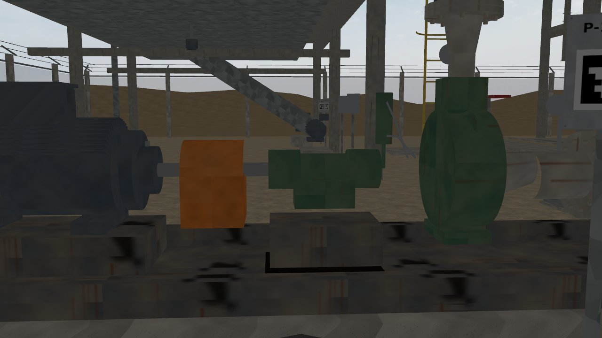
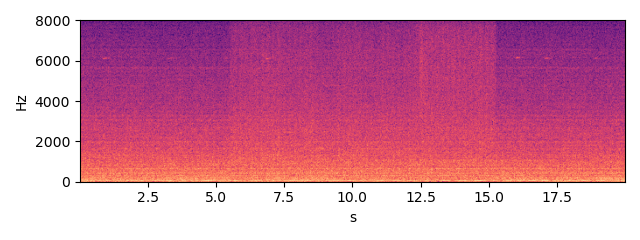
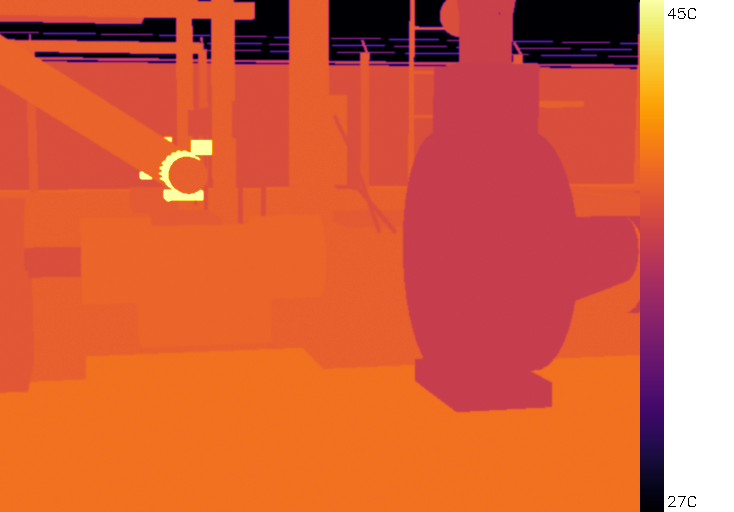
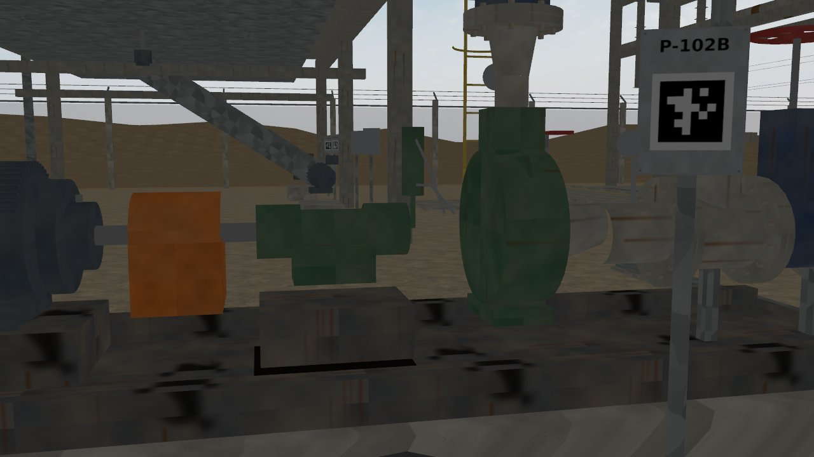
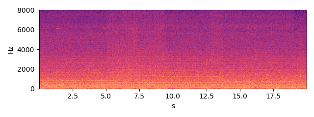
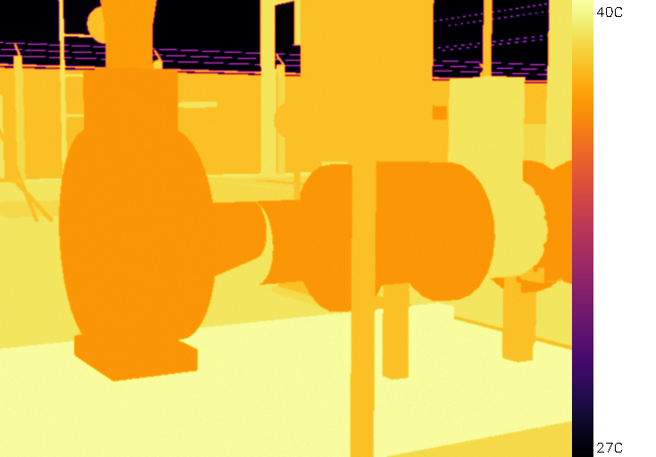
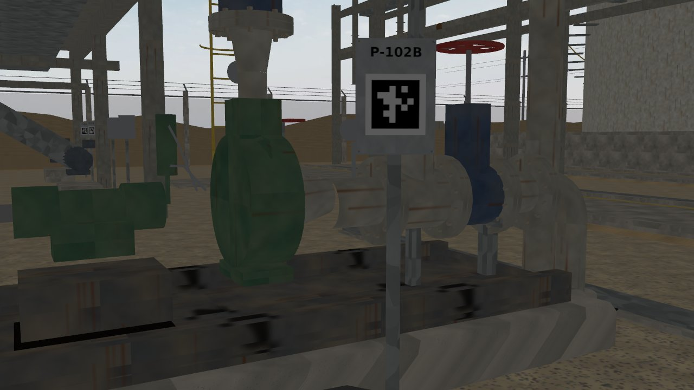
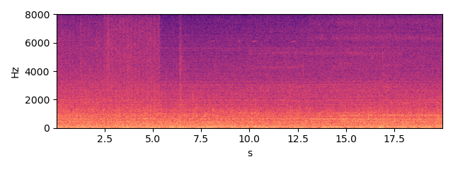

P-102B — OH2 overhung centrifugal pump
Status none HI 0.94 RUL: not estimated (no degradation trend)
Health indicator per inspection round; vertical lines = maintenance log entries; red band = RUL estimate.
Inspection snapshots (robot camera and microphone)

thermal, aim 3, max 57.4 C (Gazebo round 2026-10-03 16:41)

RGB, aim 3

sound, aim 3 (dwell window)

thermal, aim 4, max 57.2 C (Gazebo round 2026-10-03 16:41)

RGB, aim 4

sound, aim 4 (dwell window)

thermal, aim 5, max 39.9 C (Gazebo round 2026-10-03 16:41)

RGB, aim 5

sound, aim 5 (dwell window)
Alarm history
| time | level | fused score | HI | reasons | work order |
|---|
Maintenance log (CMMS view)
| date | type | details |
|---|---|---|
| 2026-10-06 | duty_swap | {"new_duty": "P-102B"} |
| 2026-10-06 | preventive_maintenance | {"duration_h": 3.0} |
| 2026-10-12 | duty_swap | {"new_duty": "P-102A"} |
| 2026-10-16 | greasing | {"part": "pump_ce_brg"} |
| 2026-10-19 | duty_swap | {"new_duty": "P-102B"} |